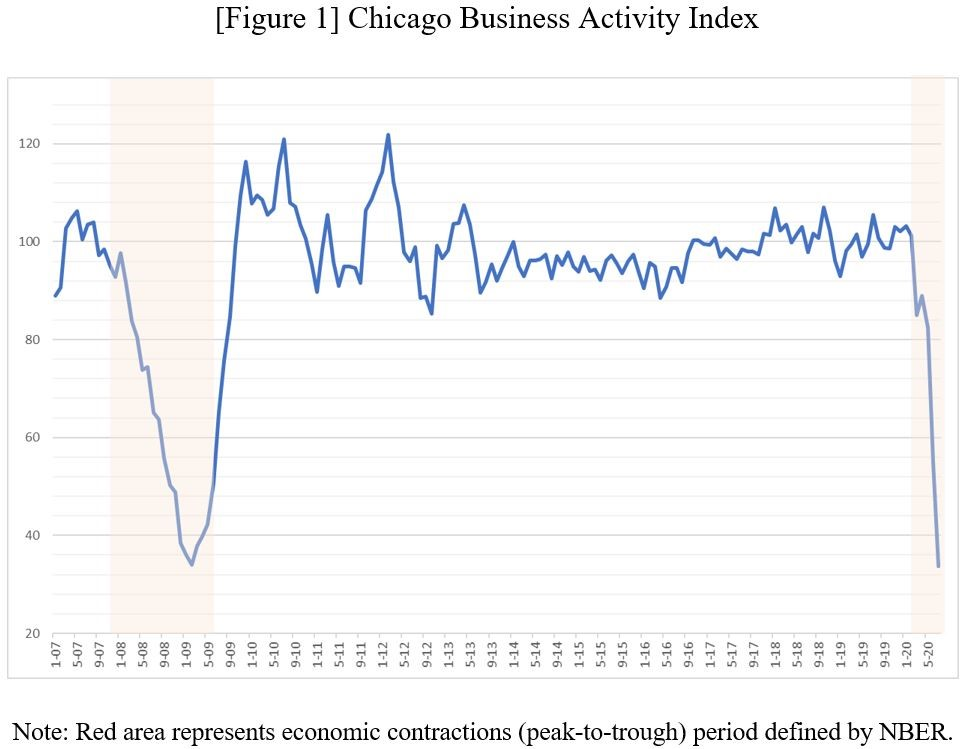
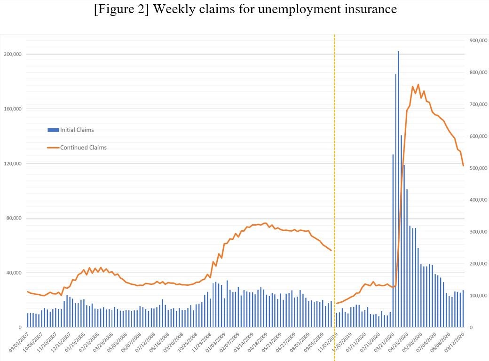
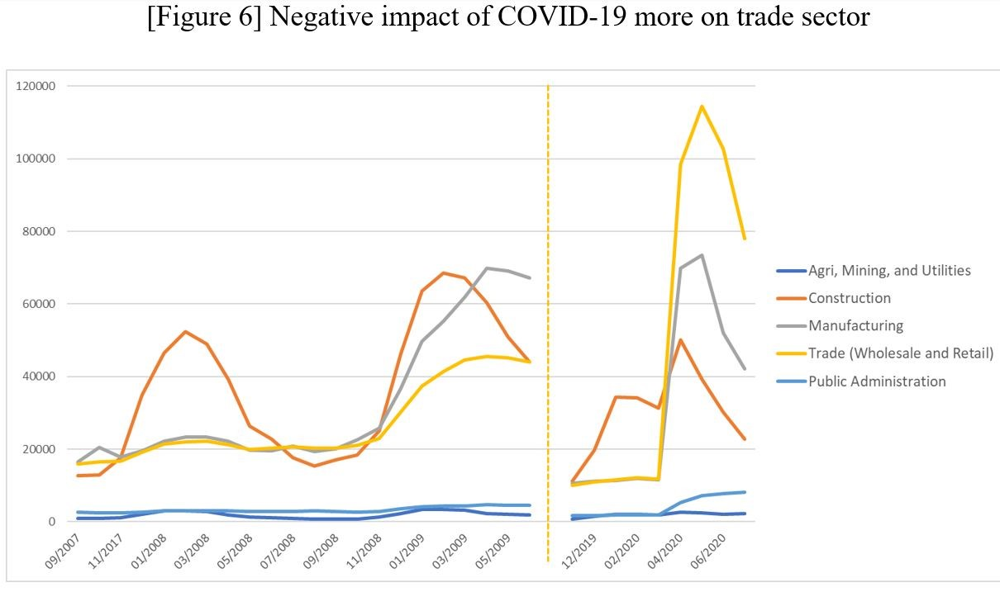
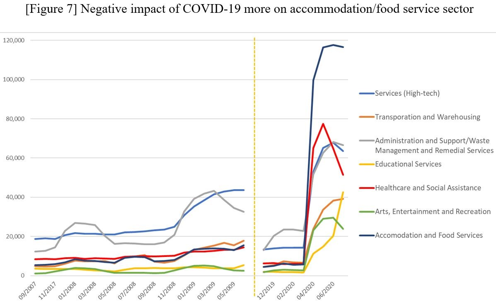

<div id="ajax-page" class="ajax-page-content">
    <div class="ajax-page-wrapper">
        <div class="ajax-page-nav">
            <div class="nav-item ajax-page-prev-next">
                <a class="ajax-page-load" href="portfolio-project-3.html"><i class="lnr lnr-chevron-left"></i></a>
                <a class="ajax-page-load" href="portfolio-project-5.html"><i class="lnr lnr-chevron-right"></i></a>
            </div>
            <div class="nav-item ajax-page-close-button">
                <a id="ajax-page-close-button" href="#"><i class="lnr lnr-cross"></i></a>
            </div>
        </div>

        <div class="ajax-page-title">
            <h1> Is this time really different? Impacts of COVID-19 on state and local economies and housing markets <em> (with Jiyoung Chae, Ivan Caceres, and Geoffrey J.D. Hewings) </em> </h1>
        </div>

        <div class="row justify-content-center">
            <div class="col-sm-8 col-md-8 portfolio-block">
                <div class="owl-carousel portfolio-page-carousel">
                    <div class="item">
                        
                    </div>
                    <div class="item">
                        
                    </div>
                    <div class="item">
                        
                    </div>
                    <div class="item">
                        
                    </div>
                </div>

                <script type="text/javascript">
                    jQuery(document).ready(function($){
                        $('.portfolio-page-carousel').imagesLoaded(function(){
                            $('.portfolio-page-carousel').owlCarousel({
                                smartSpeed:1200,
                                items: 1,
                                loop: true,
                                dots: true,
                                nav: true,
                                navText: false,
                                margin: 10,
                                autoHeight:true
                            });
                        });
                    });
                </script>
            </div>

            <div class="col-sm-12 col-md-12 portfolio-block"> 
                <div class="project-description">
                    <div class="block-title">
                        <h3>Summary</h3>
                    </div>
                    <p class="text-justify"> Available upon request </p>

                    <div class="block-title">
                        <h3> My contributions </h3>
                    </div>
                    <p class="text-justify"> 1. In this study, I conducted an economic analysis using the Chicago business activity indices, focusing on the differences observed between the two periods. </p>

                    <p> 2. I assessed the differences in the trend of unemployment insurance claims and the characteristics of the claimants. </p>

                    <p> 3. I found that the 2008 financial crisis and the COVID-19 shock impacted different industries. </p>
                </div>
            </div>
        </div>
    </div>
</div>
